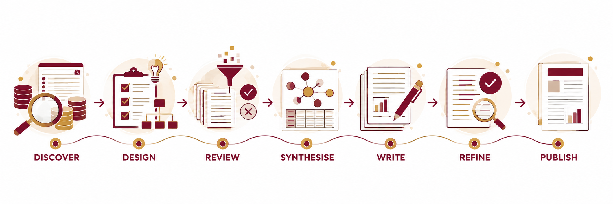

2026 Progressive SLR Workshop
Systematic Literature Review from Literature Discovery to Publication
A four-stage, hands-on learning journey that guides participants from defining a review and discovering literature to evidence synthesis, manuscript development, refinement and publication readiness.
STAGE 1 · 21 OCTDISCOVER
STAGE 2 · 22 OCTREVIEW
STAGE 3 · 18 NOVWRITE
STAGE 4 · 19 NOVREFINE

Before you start
Come prepared to build your own SLR
Learning journey
Methodology first. Tools where they add value.
The programme is organised around the systematic review process rather than around individual AI tools.
DISCOVER→DESIGN→REVIEW→SYNTHESISE→WRITE→REFINE→PUBLISH
Discover
Literature discovery, research questions, keywords, databases and reproducible search strategy.
Explore Stage 1 →Review
Protocol, deduplication, screening, PRISMA, quality assessment and extraction.
Explore Stage 2 →Write
Evidence synthesis, research gaps, tables, figures and manuscript drafting.
Explore Stage 3 →Refine
Manuscript review, journal matching, reporting compliance and submission readiness.
Explore Stage 4 →Independent SLR work · 23 October–17 November 2026
Participants complete screening, quality assessment and data extraction before returning for Stage 3. This period converts the first two workshop days into a genuine working review rather than a stand-alone training exercise.
Join the workshop
Ready to start your SLR journey?
Register once to participate in all four stages of the Systematic Literature Review Workshop 2026.
Programme deliverable
A substantially completed Systematic Literature Review manuscript prepared towards journal submission.